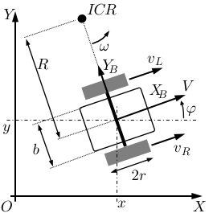

วัตถุประสงค์การเรียนรู้Learning objectives
เมื่อเรียนจบบทนี้ นักศึกษาจะสามารถ: After completing this chapter, students will be able to:
- จำแนกประเภทของหุ่นยนต์เคลื่อนที่ที่ใช้ในงานเกษตร และเลือกให้เหมาะกับสภาพพื้นที่Classify the mobile robots used in agriculture and match one to a given terrain.
- อธิบายชนิดของล้อทั้งสี่แบบและตีนตะขาบ พร้อมบอกการเคลื่อนที่ที่แต่ละแบบยอมให้เกิดขึ้นDescribe the four wheel types and tracks, and the motion each one permits.
- คำนวณจลนศาสตร์ของการขับเคลื่อนเชิงผลต่างได้ทั้งสองทิศทาง และหาตำแหน่งจุดศูนย์กลางการหมุนCompute differential-drive kinematics in both directions and locate the centre of rotation.
- คำนวณตำแหน่งจากการนับรอบล้อ และประมาณการสะสมของความคลาดเคลื่อนตามระยะทางที่วิ่งCompute a pose from wheel counts and estimate how the error accumulates with distance.
- อธิบายข้อจำกัดนอนโฮโลโนมิก และบอกว่ามันส่งผลต่อการวางแผนเส้นทางอย่างไรExplain the nonholonomic constraint and what it does to path planning.
- เปรียบเทียบวิธีระบุตำแหน่งด้วย GNSS, RTK, IMU และการผสานข้อมูล พร้อมเลือกให้เหมาะกับงานCompare GNSS, RTK, IMU and sensor fusion, and choose one for a given task.
- วางแผนเส้นทางให้ครอบคลุมแปลง คำนวณจำนวนแนว ระยะทาง และเวลาที่ใช้ต่อไร่Plan a coverage path for a field and compute the passes, the distance and the time per hectare.
- สร้างโลกจำลองใน Webots เขียนตัวควบคุม และตรวจพฤติกรรมก่อนนำไปใช้กับรถจริงBuild a Webots world, write a controller and verify behaviour before using a real vehicle.
แบบทดสอบก่อนเรียนPre-test
ตอบก่อนอ่านเนื้อหา เพื่อสำรวจความเข้าใจเดิม ระบบเฉลยพร้อมคำอธิบายทันทีเมื่อกด “ตรวจคำตอบ” Answer before reading. Explanations appear as soon as you check your answers.
10.1 ประเภทของหุ่นยนต์เคลื่อนที่ในงานเกษตร10.1 Types of mobile robot in agriculture
สิ่งที่เปลี่ยนไปจากบทที่ 8 ไม่ใช่เรื่องกลไก แต่เป็นเรื่องของ สิ่งที่หุ่นยนต์รู้ แขนกลที่ยึดกับพื้นรู้ตำแหน่งปลายเครื่องมือของตัวเองได้เสมอจากสมการ (9.11) เพราะฐานไม่เคยขยับ ส่วนหุ่นยนต์เคลื่อนที่ไม่มีจุดอ้างอิงที่แน่นอนเลย มันต้องประมาณตำแหน่งของตัวเองจากสิ่งที่วัดได้ และการประมาณนั้นผิดพลาดสะสมขึ้นเรื่อย ๆ ตามระยะทาง นี่คือปัญหาที่ครอบงำทั้งบท What changes from Chapter 8 is not the mechanics but what the robot knows. A floor-mounted arm always knows where its tool is, from equation (9.11), because its base never moves. A mobile robot has no fixed reference at all: it must estimate its own position from what it can measure, and that estimate degrades with every metre travelled. This problem dominates the whole chapter.
รถรางในโรงเรือนไม่ต้องใช้ GNSS ไม่ต้องใช้ IMU และไม่ต้องทำ SLAM เพราะมันเคลื่อนที่ได้ทางเดียวและนับระยะจากล้อบนรางได้แม่นมาก ก่อนจะลงทุนกับระบบระบุตำแหน่งราคาแพง ควรถามก่อนเสมอว่างานนั้นบังคับด้วยกลไกได้หรือไม่ ในแปลงที่ปลูกเป็นแถวตรงและถาวร การใช้รางหรือการเดินตามแถวพืชด้วยเซนเซอร์อย่างง่ายมักให้ผลดีกว่าระบบนำทางด้วยดาวเทียมที่ราคาสูงกว่าสิบเท่า A greenhouse rail robot needs no GNSS, no IMU and no SLAM, because it can move only one way and counting wheel revolutions on a rail is very accurate. Before investing in an expensive localization system, always ask whether the task can be constrained mechanically instead. In a field of straight, permanent rows, a rail or simple row-following sensors often beat a satellite navigation system costing ten times as much.
10.2 ล้อ ตีนตะขาบ และการยึดเกาะ10.2 Wheels, tracks and traction
ล้อที่ใช้ในหุ่นยนต์เคลื่อนที่มีอยู่สี่ชนิดหลัก และสิ่งที่แยกแต่ละชนิดออกจากกันคือ ทิศทางที่มันห้ามไม่ให้เคลื่อนที่ ไม่ใช่ทิศทางที่มันอนุญาต ล้อมาตรฐานหนึ่งล้อห้ามการเลื่อนด้านข้าง ซึ่งเป็นข้อจำกัดที่กลายมาเป็นหัวใจของหัวข้อ 10.4 Four kinds of wheel are used on mobile robots, and what distinguishes them is the direction each one forbids rather than the one it allows. A single standard wheel forbids sideways motion, and that constraint becomes the heart of §10.4.
10.2.1 ตีนตะขาบและความลื่นไถล10.2.1 Tracks and slip
ตีนตะขาบกระจายน้ำหนักลงบนพื้นที่สัมผัสที่กว้างกว่าล้อมาก ความดันที่กระทำต่อดินจึงต่ำลง ซึ่งให้ประโยชน์สองอย่างพร้อมกัน คือยึดเกาะได้ดีกว่าในดินอ่อน และอัดแน่นดินน้อยกว่า ซึ่งเป็นเรื่องที่สำคัญมากในแปลงเพาะปลูก แต่ต้องแลกด้วยการเลี้ยวที่เกิดจากการไถลเสมอ ไม่ใช่การกลิ้ง A track spreads the weight over a far larger contact area than a wheel, so the pressure on the soil is lower. That buys two things at once: better grip in soft ground, and less compaction — which matters a great deal in a cropped field. The cost is that a track turns by sliding rather than rolling, always.
ไม่ว่าจะเป็นล้อหรือตีนตะขาบ ความสัมพันธ์ระหว่างความเร็วเชิงมุมของล้อกับความเร็วจริงของรถไม่เคยสมบูรณ์แบบ ส่วนต่างนี้เรียกว่า อัตราการลื่นไถล Whether on wheels or tracks, the relation between wheel angular velocity and the vehicle’s actual speed is never perfect. The discrepancy is the slip ratio.
| พื้นผิวSurface | ล้อยางRubber tyre | ตีนตะขาบTrack | ผลต่อการนับรอบล้อEffect on odometry |
|---|---|---|---|
| พื้นคอนกรีตในโรงเรือนConcrete floor indoors | 0.01–0.02 | 0.03–0.05 | น้อยมาก ใช้การนับรอบล้อได้โดยตรงnegligible; wheel counts can be used directly |
| ดินแห้งอัดแน่นFirm dry soil | 0.05–0.10 | 0.04–0.08 | ระยะทางที่อ่านได้มากกว่าจริงราว 5–10%distance reads 5–10% long |
| ดินร่วนที่เพิ่งไถFreshly tilled loose soil | 0.15–0.30 | 0.08–0.15 | คลาดเคลื่อนมากจนต้องมีเซนเซอร์อื่นช่วยlarge enough to require another sensor |
| ดินเลนในนาข้าวPaddy mud | 0.30–0.60 | 0.15–0.30 | ใช้การนับรอบล้อประมาณตำแหน่งไม่ได้เลยwheel counts cannot estimate position at all |
ถ้าความลื่นไถลเป็นค่าสุ่มรอบศูนย์ การเฉลี่ยระยะยาวก็จะหักล้างกันเองและไม่เป็นปัญหา แต่ตารางที่ 10.1 แสดงว่ามันเป็นค่าบวกเสมอ ล้อจึงหมุนมากกว่าระยะทางที่เดินทางได้จริงทุกครั้ง ผลคือความคลาดเคลื่อนสะสมไปทางเดียวและโตขึ้นเรื่อย ๆ ไม่มีวันหักล้างกัน นี่คือเหตุผลเชิงกายภาพที่การนับรอบล้อเพียงอย่างเดียวใช้ไม่ได้ในแปลง ซึ่งเราจะเห็นผลเป็นตัวเลขในหัวข้อ 10.5 If slip were random about zero, it would average out over a long run and cause no trouble. Table 10.1 shows that it is always positive: the wheel turns more than the ground travelled, every time. The error therefore accumulates in one direction and grows without ever cancelling. That is the physical reason wheel counts alone fail in a field, and §10.5 puts numbers on it.
10.3 ขับเคลื่อนเชิงผลต่างและจลนศาสตร์10.3 Differential drive and its kinematics
โครงร่างที่ใช้มากที่สุดในหุ่นยนต์เคลื่อนที่คือ การขับเคลื่อนเชิงผลต่าง คือล้อขับสองล้อบนแกนเดียวกัน ขับแยกกันคนละมอเตอร์ และมีล้อกลิ้งอิสระคอยพยุงอีกหนึ่งหรือสองล้อ โครงสร้างนี้ไม่มีกลไกเลี้ยวเลย การเลี้ยวเกิดจากการให้ล้อสองข้างหมุนไม่เท่ากันเท่านั้น The commonest layout on a mobile robot is the differential drive: two driven wheels on one axis, each with its own motor, with one or two castors for support. There is no steering mechanism at all; turning comes solely from driving the two wheels at different speeds.
ถ้าล้อทั้งสองไม่ลื่นไถล จุดทุกจุดบนตัวรถจะหมุนรอบจุดเดียวกันขณะนั้น เรียกว่า จุดศูนย์กลางการหมุนขณะนั้น หรือ ICC ซึ่งต้องอยู่บนเส้นที่ลากผ่านแกนล้อทั้งสองเสมอ เพราะล้อมาตรฐานห้ามการเลื่อนด้านข้างตามรูปที่ 10.2 If neither wheel slips, every point of the vehicle turns about one common point at that instant — the instantaneous centre of curvature, or ICC. It must lie on the line through both wheel axes, because a standard wheel forbids sideways motion, as Figure 10.2 showed.


10.3.1 จากความเร็วล้อสู่การเคลื่อนที่ของตัวรถ10.3.1 From wheel speeds to vehicle motion
ให้ \( b \) เป็นระยะห่างระหว่างล้อทั้งสอง และ \( v_L, v_R \) เป็นความเร็วเชิงเส้นที่ขอบล้อซ้ายและขวา ความเร็วเดินหน้าของจุดกึ่งกลางเพลาคือค่าเฉลี่ย ส่วนอัตราการหมุนคือผลต่างหารด้วยระยะห่างล้อ Let \( b \) be the separation of the two wheels and \( v_L, v_R \) the linear speeds at their rims. The forward speed of the axle’s midpoint is their average, and the rate of turn is their difference divided by the separation.
ในทางปฏิบัติเรามักต้องการทิศกลับกัน คือผู้วางแผนเส้นทางสั่งมาเป็น \( v \) และ \( \omega \) แล้วตัวควบคุมต้องแปลงเป็นความเร็วล้อสองข้าง ซึ่งแก้สมการ (10.2) ย้อนกลับได้ทันที In practice the other direction is wanted: the planner commands \( v \) and \( \omega \), and the controller must turn that into two wheel speeds, which follows immediately by inverting equation (10.2).
รถกำจัดวัชพืชมีระยะห่างล้อ \( b = 0.60 \) m และรัศมีล้อ \( r = 0.16 \) m ต้องวิ่งโค้งรัศมี 2.5 m ด้วยความเร็ว 0.80 m/s จงหาความเร็วรอบของล้อทั้งสองข้าง A weeding robot has a wheel separation \( b = 0.60 \) m and wheel radius \( r = 0.16 \) m. It must follow a 2.5 m arc at 0.80 m/s. Find the rotational speed of each wheel.
ความต่างของรอบล้อเพียง 11.5 rpm บนรอบเฉลี่ย 47.8 rpm คือราว 24% ซึ่งหมายความว่า ความคลาดเคลื่อนของการควบคุมความเร็วล้อเพียง 2% ก็ทำให้รัศมีโค้งผิดไปเกือบหนึ่งในสิบแล้ว นี่คือเหตุผลที่รถเหล่านี้ต้องมีวงรอบควบคุมความเร็วแบบปิดที่ล้อแต่ละข้าง ตามที่เรียนมาในบทที่ 7 ไม่ใช่สั่ง PWM ไปตรง ๆ A difference of just 11.5 rpm on a mean of 47.8 rpm is about 24%, which means that a 2% error in wheel speed control throws the turning radius out by nearly a tenth. That is why such vehicles need a closed speed loop on each wheel, of the kind built in Chapter 7, rather than a PWM value sent straight to the motor.
10.3.2 การประมาณตำแหน่งจากการนับรอบล้อ10.3.2 Estimating position from wheel counts
เมื่อรู้ \( v \) และ \( \omega \) แล้ว ท่าของรถในระนาบเปลี่ยนแปลงตามเวลาดังนี้ With \( v \) and \( \omega \) known, the vehicle’s planar pose evolves in time as follows.
ตัวควบคุมจริงอ่านตัวเข้ารหัสทุกคาบ \( \Delta t \) จึงต้องใช้รูปไม่ต่อเนื่อง การประมาณที่ใช้กันทั่วไปคือใช้ทิศทางกึ่งกลางของช่วง ซึ่งแม่นกว่าการใช้ทิศเริ่มต้นมาก A real controller reads its encoders every \( \Delta t \), so a discrete form is needed. The usual approximation uses the heading at the middle of the interval, which is considerably more accurate than using the heading at its start.
ความเร็วล้อแต่ละข้างได้มาจากจำนวนพัลส์ \( n \) ที่นับได้ในคาบนั้น โดยที่ \( N \) คือจำนวนนับต่อรอบของตัวเข้ารหัสและ \( g \) คืออัตราทดเกียร์ ซึ่งเป็นสมการเดียวกับ (8.8) ในบทที่ 8 เพียงแต่อ่านกลับทาง Each wheel speed comes from the pulse count \( n \) in that interval, where \( N \) is the encoder’s counts per revolution and \( g \) the gear ratio — the same relation as equation (8.8), simply read the other way.
สมการ (10.2) ถึง (10.9) ไม่มีมวล แรง หรือแรงเสียดทานอยู่เลย จึงบอกได้เพียงว่า ถ้า ล้อหมุนด้วยความเร็วนั้นจริงและไม่ลื่นไถล รถจะไปอยู่ที่ใด สมการเหล่านี้ไม่รู้ว่ารถเร่งทันหรือไม่ ไม่รู้ว่าล้อลื่นไปเท่าใด และไม่รู้ว่าพื้นลาดเอียงหรือไม่ ทุกครั้งที่เห็นว่าตำแหน่งจริงไม่ตรงกับที่คำนวณได้ ให้สงสัยข้อสมมติเหล่านี้ก่อนเสมอ ไม่ใช่สงสัยสมการ Equations (10.2) to (10.9) contain no mass, no force and no friction. They say only where the vehicle will be if the wheels really turn at those speeds and do not slip. They know nothing about whether the vehicle can accelerate that hard, how much the wheels slipped, or whether the ground was sloping. Whenever the real position disagrees with the computed one, suspect these assumptions first, not the equations.
10.4 โครงร่างการขับเคลื่อนอื่นและข้อจำกัดนอนโฮโลโนมิก10.4 Other drive layouts, and the nonholonomic constraint
รถที่ใช้ล้อมาตรฐานทุกคัน ไม่ว่าจะเป็นแบบขับเคลื่อนเชิงผลต่างหรือแบบรถยนต์ มีข้อห้ามข้อเดียวกันคือ เคลื่อนที่ไปด้านข้างไม่ได้ เขียนเป็นสมการได้ว่าองค์ประกอบของความเร็วในแนวตั้งฉากกับทิศหัวรถต้องเป็นศูนย์ตลอดเวลา Every vehicle on standard wheels — differential drive or car-like — shares one prohibition: it cannot move sideways. Written as an equation, the component of velocity perpendicular to the heading must be zero at all times.
ข้อจำกัดนี้เรียกว่า นอนโฮโลโนมิก เพราะมันจำกัด ความเร็ว แต่ไม่ได้จำกัด ตำแหน่ง รถยังไปถึงจุดใดก็ได้ในระนาบและหันไปทางใดก็ได้ เพียงแต่ต้องเดินทางให้ถูกวิธี การจอดรถเข้าซองเป็นตัวอย่างที่ทุกคนคุ้นเคย คือเราไปถึงตำแหน่งข้าง ๆ ได้ แต่ต้องเดินหน้าถอยหลังหลายครั้ง ไม่สามารถเลื่อนตรงไปด้านข้างได้ในครั้งเดียว This is a nonholonomic constraint, because it restricts the velocity without restricting the position. The vehicle can still reach any point in the plane facing any direction; it merely has to travel there properly. Parallel parking is the familiar example: the spot alongside is reachable, but only through a sequence of forward and reverse moves, never by sliding straight sideways.
อัลกอริทึมหาเส้นทางที่สั้นที่สุดบนตารางกริดจะให้เส้นทางที่มีมุมหักฉาก ซึ่งรถนอนโฮโลโนมิกเดินตามไม่ได้เลยเพราะต้องเลื่อนข้าง เส้นทางที่ได้จึงต้องผ่านการปรับให้เรียบและให้รัศมีความโค้งทุกจุดไม่ต่ำกว่ารัศมีวงเลี้ยวต่ำสุดของรถเสียก่อน นี่คือความต่างสำคัญระหว่างการวางแผนเส้นทางของหุ่นยนต์เคลื่อนที่กับของแขนกลในบทที่ 9 ซึ่งเคลื่อนที่ในปริภูมิข้อต่อได้อย่างอิสระ A shortest-path algorithm on a grid returns a route with right-angled corners, which a nonholonomic vehicle cannot follow at all, since the corners would require sliding sideways. The route must first be smoothed so that its curvature nowhere exceeds what the vehicle’s minimum turning radius allows. This is the important difference from planning for the arm of Chapter 9, which moves freely in joint space.
10.4.1 การเลี้ยวแบบแอกเคอร์มันน์10.4.1 Ackermann steering
รถแทรกเตอร์และรถยนต์ใช้การเลี้ยวที่ล้อหน้า ซึ่งเงื่อนไขทางจลนศาสตร์คือแนวแกนของล้อทุกล้อต้องตัดกันที่ ICC จุดเดียว เหมือนกับรูปที่ 10.3 ทุกประการ ถ้าคิดรวมล้อหน้าสองล้อเป็นล้อเดียวที่กึ่งกลาง จะได้ความสัมพันธ์อย่างง่ายระหว่างมุมเลี้ยว \( \delta \) กับรัศมีวงเลี้ยว โดย \( L \) คือระยะฐานล้อ Tractors and cars steer at the front wheels, and the kinematic condition is that the axes of all wheels meet at one ICC — exactly as in Figure 10.3. Treating the two front wheels as a single wheel at the centre gives a simple relation between the steering angle \( \delta \) and the turning radius, with \( L \) the wheelbase.
แทรกเตอร์ที่มีฐานล้อ \( L = 2.1 \) m และเลี้ยวได้สูงสุด \( 40\deg \) จะมีรัศมีวงเลี้ยวต่ำสุด \( 2.1/\tan 40\deg = 2.5 \) m ตัวเลขนี้ไม่ได้เป็นเพียงข้อมูลจำเพาะ แต่เป็นตัวกำหนดความกว้างของหัวแปลงที่ต้องเว้นไว้สำหรับกลับรถ ซึ่งจะกลับมาใช้อีกครั้งในหัวข้อ 10.6 A tractor with a wheelbase \( L = 2.1 \) m steering to \( 40\deg \) has a minimum turning radius of \( 2.1/\tan 40\deg = 2.5 \) m. That figure is not merely a specification: it sets how wide the headland must be left for turning, which returns in §10.6.
| โครงร่างLayout | หมุนอยู่กับที่Turns on the spot | เลื่อนข้างMoves sideways | ความคลาดเคลื่อนจากการนับรอบล้อOdometry error | งานที่เหมาะSuited to |
|---|---|---|---|---|
| ขับเคลื่อนเชิงผลต่างDifferential drive | ได้yes | ไม่ได้no | ต่ำ ถ้าพื้นแข็งlow on firm ground | โรงเรือน แปลงผักแถวแคบgreenhouses, narrow vegetable rows |
| แอกเคอร์มันน์Ackermann | ไม่ได้no | ไม่ได้no | ต่ำที่สุด เพราะล้อกลิ้งล้วนlowest: the wheels only roll | แปลงใหญ่ ความเร็วสูง ลากอุปกรณ์หนักlarge fields, higher speed, heavy implements |
| สกิดสเตียร์และตีนตะขาบSkid steer and tracks | ได้yes | ไม่ได้no | สูง เพราะการเลี้ยวต้องไถลเสมอhigh: turning always slides | นาข้าว ดินอ่อน พื้นที่ลาดชันpaddies, soft soil, slopes |
| รอบทิศทางOmnidirectional | ได้yes | ได้yes | ปานกลาง ลูกกลิ้งลื่นง่ายmoderate: the rollers slip readily | โรงคัดบรรจุ คลังสินค้า พื้นเรียบpackhouses, warehouses, smooth floors |
10.5 การระบุตำแหน่ง10.5 Localization
สมการ (10.9) ให้วิธีประมาณตำแหน่งจากการนับรอบล้อ เรียกว่า การคำนวณตำแหน่งแบบสะสม วิธีนี้ไม่ต้องใช้อุปกรณ์ภายนอกเลย ทำงานได้ทุกที่ และให้ค่าทุกคาบการควบคุม ข้อเสียมีเพียงข้อเดียวแต่ร้ายแรงมาก คือมันบวกความคลาดเคลื่อนเข้าไปเรื่อย ๆ โดยไม่มีอะไรมาดึงกลับ Equation (10.9) estimates position by accumulating wheel counts, which is called dead reckoning. It needs no external equipment, works anywhere and produces a value every control cycle. It has exactly one drawback, and it is a severe one: it adds up error indefinitely with nothing to pull it back.
10.5.1 ความคลาดเคลื่อนของทิศทางคือตัวร้ายที่แท้จริง10.5.1 Heading error is the real culprit
สมมติว่าล้อขวามีรัศมีประสิทธิผลมากกว่าล้อซ้ายอยู่เศษส่วน \( \varepsilon \) ซึ่งเกิดได้ง่ายมากจากแรงดันลมยางที่ต่างกันเพียงเล็กน้อยหรือจากการสึกที่ไม่เท่ากัน เมื่อสั่งให้วิ่งตรงเป็นระยะ \( d \) ล้อขวาจะเดินทางได้ \( d(1+\varepsilon) \) ขณะที่ล้อซ้ายได้ \( d \) ผลต่างนี้ถูกตีความว่าเป็นการเลี้ยว Suppose the right wheel’s effective radius exceeds the left’s by a fraction \( \varepsilon \) — which a small difference in tyre pressure or uneven wear produces very easily. Commanded to run straight for a distance \( d \), the right wheel covers \( d(1+\varepsilon) \) while the left covers \( d \), and that difference is read as a turn.
และเมื่อทิศทางผิดไปแล้ว ระยะทางที่วิ่งต่อไปอีก \( d' \) จะทำให้ตำแหน่งเบี่ยงออกด้านข้างเป็นสัดส่วนโดยตรง Once the heading is wrong, every further metre \( d' \) driven displaces the position sideways in direct proportion.
รถกำจัดวัชพืชจากตัวอย่าง 10.1 มี \( b = 0.60 \) m ยางล้อขวาอ่อนกว่าเล็กน้อยจนรัศมีประสิทธิผลต่างกัน 0.5% จงหาความคลาดเคลื่อนของทิศทางหลังวิ่งตรงไป 50 m และระยะเบี่ยงด้านข้างหลังวิ่งต่ออีก 50 m The weeding robot of example 10.1 has \( b = 0.60 \) m. One tyre is slightly soft, giving a 0.5% difference in effective radius. Find the heading error after 50 m of straight running, and the lateral displacement over the next 50 m.
ยางที่อ่อนกว่ากันครึ่งเปอร์เซ็นต์ ซึ่งมองด้วยตาไม่เห็นเลย ทำให้รถออกนอกเส้นทางไปกว่ายี่สิบเมตรภายในระยะร้อยเมตร ตัวเลขนี้ไม่ได้เกินจริงและเป็นเหตุผลว่าทำไมไม่มีรถเกษตรอัตโนมัติคันใดในโลกที่ใช้การนับรอบล้อเพียงอย่างเดียว การนับรอบล้อยังมีประโยชน์มากในฐานะแหล่งข้อมูลที่ให้ค่าถี่และต่อเนื่อง แต่ต้องมีเซนเซอร์ที่วัดเทียบกับโลกภายนอกมาคอยดึงกลับเสมอ Half a percent of difference between two tyres — invisible to the eye — takes the vehicle more than twenty metres off course within a hundred metres of travel. The figure is not exaggerated, and it is why no autonomous farm vehicle anywhere relies on wheel counts alone. Odometry remains valuable as a fast, continuous source of information, but something that measures against the outside world must always be there to pull it back.
10.5.2 เซนเซอร์ที่วัดเทียบกับโลกภายนอก10.5.2 Sensors that measure against the outside world
ความคลาดเคลื่อนสะสมหยุดได้ด้วยเซนเซอร์ที่วัดเทียบกับสิ่งที่อยู่นอกตัวรถ ซึ่งแต่ละชนิดมีจุดแข็งและจุดอ่อนที่ชดเชยกันได้พอดี Accumulating error is stopped by a sensor that measures against something outside the vehicle, and the available kinds have strengths and weaknesses that complement each other neatly.
| แหล่งข้อมูลSource | ความแม่นยำโดยทั่วไปTypical accuracy | อัตราการให้ค่าUpdate rate | ความคลาดเคลื่อนสะสมDrifts? | จุดอ่อนหลักMain weakness |
|---|---|---|---|---|
| การนับรอบล้อWheel odometry | 1–5% ของระยะทาง1–5% of distance | 50–1000 Hz | สะสมไม่สิ้นสุดwithout limit | ลื่นไถลและรัศมีล้อที่ไม่เท่ากันslip and unequal wheel radii |
| GNSS ทั่วไปStandalone GNSS | 2–5 m | 1–10 Hz | ไม่สะสมno | สัญญาณถูกบังโดยต้นไม้และอาคารsignal blocked by trees and buildings |
| GNSS แบบ RTKRTK GNSS | 0.02–0.05 m | 5–20 Hz | ไม่สะสมno | ต้องมีสถานีฐานและการเชื่อมต่อที่ไม่ขาดneeds a base station and an unbroken link |
| หน่วยวัดความเฉื่อย (IMU)Inertial unit (IMU) | ทิศทางดีมากในระยะสั้นexcellent heading, briefly | 100–1000 Hz | สะสมเร็วมากquickly | อคติของไจโรทำให้มุมไหลไปตามเวลาgyro bias makes the angle drift with time |
| ไลดาร์หรือกล้องกับแผนที่ (SLAM)Lidar or camera with a map (SLAM) | 0.05–0.20 m | 5–30 Hz | ไม่สะสมถ้ากลับมาเจอจุดเดิมno, once a place is revisited | แปลงโล่งไม่มีลักษณะเด่นให้จับan open field offers nothing distinctive to latch onto |
สังเกตตารางที่ 10.3 ให้ดี การนับรอบล้อและ IMU ให้ค่าถี่มากแต่ไหลไปตามเวลา ส่วน GNSS ให้ค่าช้าและมีสัญญาณรบกวนแต่ไม่ไหลไปไหน การรวมสองกลุ่มนี้เข้าด้วยกันด้วย ตัวกรองคาลมาน จึงให้ผลที่ทั้งถี่และไม่ไหล ซึ่งดีกว่าเซนเซอร์ตัวใดตัวหนึ่งเพียงลำพัง หลักการนี้ไม่ได้จำกัดอยู่แค่หุ่นยนต์ แต่เป็นแนวคิดเดียวกับที่บทที่ 7 ใช้ คือเทอมที่ตอบเร็วทำงานร่วมกับเทอมที่ขจัดความคลาดเคลื่อนระยะยาว Read Table 10.3 carefully. Odometry and the IMU update very fast but drift with time; GNSS is slow and noisy but does not drift at all. Combining the two families through a Kalman filter gives an estimate that is both fast and drift-free, better than any single sensor. The principle is not peculiar to robots: it is the same idea as Chapter 7, where a fast-responding term works alongside one that removes long-term error.
10.6 การวางแผนเส้นทางและการครอบคลุมแปลง10.6 Path planning and field coverage
การวางแผนเส้นทางของหุ่นยนต์แบ่งเป็นสองชั้นที่ทำงานคนละจังหวะเวลา Path planning for a robot divides into two layers working on different timescales.
- การวางแผนระดับโลก ใช้แผนที่ที่รู้ล่วงหน้า คำนวณครั้งเดียวก่อนออกเดินทาง วิธีที่พบบ่อยที่สุดคือแบ่งพื้นที่เป็นตารางกริดแล้วหาเส้นทางที่สั้นที่สุดด้วย A* ซึ่งเลือกช่องถัดไปจากผลรวมของระยะทางที่เดินมาแล้วกับระยะทางที่ประมาณว่าเหลืออยู่Global planning uses a map known in advance and runs once before setting off. The commonest method divides the area into a grid and searches for the shortest route with A*, which picks the next cell from the sum of the distance already travelled and an estimate of the distance remaining.
- การวางแผนระดับท้องถิ่น ทำงานทุกคาบการควบคุม โดยใช้ข้อมูลเซนเซอร์สด เพื่อหลบสิ่งที่แผนที่ไม่รู้ เช่น คนที่เดินเข้ามา กิ่งไม้ที่หัก หรือหลุมที่เพิ่งเกิด แล้วจึงกลับเข้าสู่เส้นทางเดิมLocal planning runs every control cycle on live sensor data, to avoid what the map does not know about — a person walking in, a fallen branch, a hole that has just appeared — and then rejoins the planned route.
10.6.1 การวางแผนให้ครอบคลุมแปลง10.6.1 Planning to cover a field
งานเกษตรส่วนใหญ่ไม่ได้ต้องการเส้นทางที่สั้นที่สุดจากจุดหนึ่งไปอีกจุดหนึ่ง แต่ต้องการเส้นทางที่ ผ่านทุกตารางเมตรของแปลงอย่างน้อยหนึ่งครั้ง ซึ่งเป็นปัญหาคนละประเภทกันเรียกว่า การวางแผนเส้นทางแบบครอบคลุม รูปแบบที่ใช้กันแทบทุกแปลงคือการวิ่งกลับไปกลับมาเป็นแนวขนาน Most agricultural work does not want the shortest route between two points but a route that passes over every square metre of the field at least once — a different problem, called coverage path planning. The pattern used on nearly every field is a set of parallel back-and-forth passes.
ความกว้างทำงานที่ได้จริงน้อยกว่าความกว้างของอุปกรณ์เสมอ เพราะต้องเผื่อการซ้อนทับเป็นสัดส่วน \( O \) ไว้กันพลาดระหว่างแนว The effective working width is always less than the implement’s own width, because an overlap fraction \( O \) must be allowed between passes to guard against gaps.
แนวทำงานไม่ได้ยาวเท่าความยาวแปลง เพราะต้องเว้นหัวแปลงไว้ที่ปลายทั้งสองด้านสำหรับกลับรถ ความกว้างของหัวแปลงถูกกำหนดโดยรัศมีวงเลี้ยวต่ำสุดจากสมการ (10.12) ไม่ใช่โดยความชอบของผู้ออกแบบ A pass is not as long as the field, because a headland must be left at each end for turning. The width of that headland is set by the minimum turning radius of equation (10.12), not by the designer’s preference.
แปลงขนาด \( L = 200 \) m, \( W = 120 \) m บูมพ่นกว้าง \( w = 3.0 \) m ซ้อนทับ 10% รถวิ่งด้วย 1.5 m/s กลับรถครั้งละ 25 s และมีรัศมีวงเลี้ยวต่ำสุด 2.5 m จงหาจำนวนแนว ระยะทางรวม เวลาที่ใช้ และอัตราการทำงานต่อชั่วโมง A field is \( L = 200 \) m by \( W = 120 \) m, the boom is \( w = 3.0 \) m wide with a 10% overlap, the vehicle runs at 1.5 m/s, each turn takes 25 s and the minimum turning radius is 2.5 m. Find the number of passes, the total distance, the time and the work rate per hour.
ตัวเลขสองตัวที่ควรสังเกต อย่างแรกคือเวลาที่ใช้กลับรถ 1100 s คิดเป็น 16% ของเวลาทั้งหมด ซึ่งเป็นเวลาที่ไม่ได้ทำงานเลย นี่คือเหตุผลที่แปลงยาวได้เปรียบแปลงสั้นอย่างมาก อย่างที่สองคือ 45 แนวคูณความกว้างบูม 3.0 m ได้ 135 m ขณะที่แปลงกว้างเพียง 120 m ส่วนเกิน 15 m คือพื้นที่ที่ถูกพ่นซ้ำสองครั้ง คิดเป็นสารเคมีที่ใช้เกินไป 12.5% ซึ่งเป็นต้นทุนที่มองไม่เห็นในแผนแต่จ่ายจริงทุกฤดู Two figures deserve attention. First, the 1100 s spent turning is 16% of the total, and none of it does any work — which is why a long field beats a short one so decisively. Second, 45 passes times a 3.0 m boom is 135 m of treated width across a field only 120 m wide: the surplus 15 m is ground sprayed twice, 12.5% of chemical used beyond what is needed. That cost is invisible in the plan and paid in full every season.
10.7 การจำลองด้วย Webots10.7 Simulation in Webots
บทที่ 9 ใช้ RoboDK ซึ่งเหมาะกับแขนกลที่ยึดกับพื้น เพราะสิ่งที่ต้องตรวจคือการเอื้อมถึง การชน และจุดเอกฐาน ล้วนเป็นเรื่องเรขาคณิตล้วน ๆ แต่หุ่นยนต์เคลื่อนที่มีคำถามที่เรขาคณิตตอบไม่ได้ เช่น ล้อจะลื่นหรือไม่ รถจะคว่ำบนทางลาดหรือไม่ และเซนเซอร์จะเห็นอะไรเมื่อมีต้นไม้บัง คำถามเหล่านี้ต้องการโปรแกรมจำลองที่คำนวณฟิสิกส์และจำลองเซนเซอร์ด้วย ซึ่งคือสิ่งที่ Webots ทำ Chapter 9 used RoboDK, which suits a floor-mounted arm because what must be checked — reach, collision, singularity — is purely geometric. A mobile robot raises questions geometry cannot answer: will the wheels slip, will the vehicle tip on that slope, and what will the sensors see when a tree is in the way? Those need a simulator that computes physics and models sensors, which is what Webots does.
10.7.1 สิ่งที่อยู่ในโลกจำลอง10.7.1 What a world contains
โลกใน Webots เป็นต้นไม้ของโหนด และเช่นเดียวกับบทที่ 9 ทุกชื่อในต้นไม้นั้นมีสมการรองรับอยู่ในบทนี้ A Webots world is a tree of nodes, and as in Chapter 9 every name in that tree has an equation behind it in this chapter.
| Webots | ในบทนี้In this chapter | บนรถจริงOn the real vehicle |
|---|---|---|
RotationalMotor | \( v_L, v_R \) ในสมการ (10.2)in equation (10.2) | มอเตอร์พร้อมไดรฟ์และวงรอบความเร็วmotor with its drive and speed loop |
PositionSensor | \( n \) ในสมการ (10.10)in equation (10.10) | ตัวเข้ารหัสที่เพลาล้อthe encoder on the wheel shaft |
GPS | การแก้ความคลาดเคลื่อนในหัวข้อ 10.5the correction of §10.5 | ตัวรับ GNSS หรือ RTKa GNSS or RTK receiver |
InertialUnit, Gyro | \( \theta \) ในสมการ (10.9)in equation (10.9) | IMU |
DistanceSensor, Lidar | การวางแผนระดับท้องถิ่นในหัวข้อ 10.6local planning in §10.6 | เซนเซอร์หลบสิ่งกีดขวางthe obstacle-avoidance sensors |
ContactProperties | \( i \) ในสมการ (10.1)in equation (10.1) | สัมประสิทธิ์เสียดทานของยางกับดินthe friction between tyre and soil |
Supervisor | ตำแหน่งจริงที่ใช้วัดความคลาดเคลื่อนthe true pose, for measuring error | ไม่มี ต้องวัดด้วยเครื่องมือภายนอกnothing; it must be measured externally |
ใน Webots เราถามตำแหน่งจริงของรถได้ตลอดเวลาผ่าน Supervisor ซึ่งมีประโยชน์มากในการวัดว่าอัลกอริทึมของเราคลาดเคลื่อนไปเท่าใด แต่ต้องระวังอย่างยิ่งที่จะไม่เผลอนำค่านั้นไปใช้ในตัวควบคุมเอง เพราะรถจริงไม่มีทางรู้ค่านี้ ข้อผิดพลาดที่พบบ่อยที่สุดในงานของนักศึกษาคือเขียนตัวควบคุมที่ทำงานได้ดีเยี่ยมในโปรแกรมจำลอง แล้วพบว่าใช้กับรถจริงไม่ได้เลย เพราะมันแอบใช้ข้อมูลที่มีอยู่เฉพาะในโลกจำลอง
In Webots the vehicle’s true position can be queried at any time through the Supervisor, which is invaluable for measuring how far an algorithm has drifted. Great care is needed not to let that value leak into the controller itself, because a real vehicle can never know it. The commonest fault in student work is a controller that performs beautifully in simulation and not at all in reality, because it was quietly using information that exists only inside the simulator.
10.7.2 โครงของตัวควบคุม10.7.2 The shape of a controller
ตัวควบคุมใน Webots คือโปรแกรมที่วนรอบเดียวกับที่รถจริงใช้ คือ อ่านเซนเซอร์ ปรับความเชื่อเรื่องตำแหน่ง ตัดสินใจ แล้วสั่งมอเตอร์ จากนั้นรอให้เวลาจำลองเดินไปหนึ่งคาบ โครงนี้ตรงกับรอบการสแกนของ PLC ในบทที่ 4 ทุกประการ และควรเขียนให้แยกส่วนกันชัดเจนตั้งแต่ต้น เพราะทั้งสี่ส่วนจะถูกย้ายไปรันบนรถจริงในปฏิบัติการที่ 10 A Webots controller is a program with the same loop a real vehicle runs: read the sensors, update the belief about position, decide, command the motors, then wait one simulation step. The structure matches the PLC scan cycle of Chapter 4 exactly, and the four parts should be kept clearly separate from the start, because all four move onto the real vehicle in Laboratory 10.
- อ่านค่าRead
อ่านPositionSensorของล้อทั้งสองข้าง และเซนเซอร์ภายนอกที่มี แปลงจำนวนนับเป็นระยะทางด้วยสมการ (10.10) Read both wheelPositionSensorvalues and whatever external sensors exist, converting counts to distance with equation (10.10). - ปรับความเชื่อUpdate the belief
อัปเดตท่าด้วยสมการ (10.9) แล้วถ้ามีค่าจาก GPS หรือ IMU เข้ามาในคาบนั้น ให้ดึงความเชื่อเข้าหาค่าที่วัดได้ตามน้ำหนักที่กำหนด Advance the pose with equation (10.9), then, if a GPS or IMU reading arrived in that cycle, pull the belief towards it by a chosen weight. - ตัดสินใจDecide
เทียบความเชื่อกับเป้าหมายถัดไปในแผน แล้วคำนวณ \( v \) และ \( \omega \) ที่ต้องการ โดยจำกัดไม่ให้เกินขีดจำกัดของรถ Compare the belief with the next waypoint in the plan and compute the desired \( v \) and \( \omega \), clipped to the vehicle’s limits. - สั่งมอเตอร์Command
แปลง \( v \) และ \( \omega \) เป็นความเร็วล้อสองข้างด้วยสมการ (10.4) แล้วส่งให้RotationalMotorทั้งสองตัว Convert \( v \) and \( \omega \) into two wheel speeds with equation (10.4) and send them to bothRotationalMotornodes.
Webots คำนวณฟิสิกส์ของวัตถุแข็งได้ดีมาก แต่ดินไม่ใช่วัตถุแข็ง ดินยุบ เปลี่ยนความชื้นตามเวลา และเปลี่ยนสัมประสิทธิ์เสียดทานไปตามความลึกที่ล้อจม ค่า ContactProperties ที่ตั้งไว้จึงเป็นเพียงค่าเฉลี่ยหยาบ ๆ ของสภาพหนึ่งเท่านั้น ให้ใช้โปรแกรมจำลองเพื่อตรวจ ตรรกะ ของตัวควบคุม การหลบสิ่งกีดขวาง และความถูกต้องของแผนการครอบคลุมแปลง ส่วนตัวเลขเรื่องความลื่นไถลและเวลาที่ใช้จริงต้องวัดในแปลงเท่านั้น
Webots computes rigid-body physics very well, but soil is not a rigid body: it yields, it changes with moisture, and its friction changes with how deeply the wheel has sunk. A ContactProperties value is therefore a coarse average of one condition. Use the simulator to check the logic of the controller, the obstacle avoidance and the correctness of a coverage plan; the real figures for slip and for time taken can only be measured in the field.
10.8 กิจกรรมในชั้นเรียน10.8 In-class activity
กิจกรรมที่ 10.1 — วางแผนครอบคลุมแปลงจริง และสเปกระบบนำทางที่ต้องใช้Activity 10.1 — Plan a real field, and specify the navigation it needs
กลุ่มละ 3–4 คน · 40 นาที · ทำในคาบบรรยายGroups of 3–4 · 40 minutes · during the lecture hour
โจทย์The brief
แปลงอ้อยรูปสี่เหลี่ยมผืนผ้าขนาด 320 m × 150 m มีเสาไฟฟ้าหนึ่งต้นอยู่กลางแปลง ซึ่งต้องเว้นระยะปลอดภัยรอบเสา 6 m รถพ่นสารมีบูมกว้าง 4.0 m วิ่งด้วย 1.8 m/s ฐานล้อ 2.4 m และเลี้ยวได้สูงสุด \( 35\deg \) การกลับรถหนึ่งครั้งใช้เวลา 30 s ให้วางแผนการทำงานและระบุระบบนำทางที่ต้องใช้ A rectangular cane field measures 320 m by 150 m, with one electricity pole in the middle around which a 6 m clearance must be kept. The sprayer has a 4.0 m boom, runs at 1.8 m/s, has a 2.4 m wheelbase steering to \( 35\deg \), and each turn takes 30 s. Plan the operation and specify the navigation system it needs.
ขั้นตอนSteps
- คำนวณรัศมีวงเลี้ยวต่ำสุดจากสมการ (10.12) แล้วหาความกว้างหัวแปลงที่ต้องเว้นไว้Compute the minimum turning radius from equation (10.12) and the headland width it forces.
- วางแผนสองแบบ แบบหนึ่งวิ่งแนวยาว 320 m อีกแบบวิ่งแนวสั้น 150 m คำนวณจำนวนแนว ระยะทาง และเวลาทั้งหมดของทั้งสองแบบที่การซ้อนทับ 10%Plan it twice, once with passes along the 320 m side and once along the 150 m side, computing the passes, distance and total time for each at 10% overlap.
- คำนวณสัดส่วนเวลาที่เสียไปกับการกลับรถของแต่ละแบบ แล้วอธิบายว่าทำไมตัวเลขนี้จึงต่างกันมากCompute the fraction of time each plan loses to turning, and explain why the two differ so much.
- คำนวณปริมาณสารที่ใช้เกินจากการซ้อนทับ ทั้งที่ 10% และถ้าลดลงเหลือ 3% คิดเป็นกี่เปอร์เซ็นต์ของทั้งแปลงCompute the chemical used in excess from the overlap, at 10% and if it were cut to 3%, as a percentage of the whole field.
- จากการซ้อมทับ 3% ที่ต้องการ ให้ย้อนกลับไปหาว่าระบบระบุตำแหน่งต้องแม่นยำกี่เซนติเมตร แล้วเลือกแหล่งข้อมูลจากตารางที่ 10.3 พร้อมเหตุผลFrom the 3% overlap wanted, work backwards to the positioning accuracy in centimetres that implies, and choose a source from Table 10.3 with your reasons.
- วาดเส้นทางรอบเสาไฟฟ้า และระบุว่าพื้นที่ใดที่รถเข้าไม่ถึงและต้องจัดการด้วยวิธีอื่นSketch the route around the pole and identify the ground the vehicle cannot reach, which must be handled another way.
ข้อแรก ความกว้างทำงาน 4.0 m ที่การซ้อนทับ 3% หมายความว่าช่องว่างระหว่างแนวมีเพียง 0.12 m ให้เผื่อผิดได้ ดังนั้นความคลาดเคลื่อนทางด้านข้างต้องน้อยกว่าครึ่งหนึ่งของค่านั้น ข้อที่สอง การวิ่งแนวสั้นทำให้ต้องกลับรถบ่อยกว่าสองเท่ากว่า และเวลากลับรถ 30 s ไม่ได้ลดลงเลยเมื่อแนวสั้นลง First, a 4.0 m working width at 3% overlap leaves only 0.12 m of margin between passes, so the lateral error must stay below half of that. Second, passes along the short side need more than twice as many turns, and the 30 s each turn costs does not shrink when the pass does.
สิ่งที่ต้องส่งWhat to hand in
- ตารางเปรียบเทียบแผนทั้งสองแบบ ครบทั้งจำนวนแนว ระยะทาง เวลา และสัดส่วนเวลากลับรถA table comparing both plans: passes, distance, time and the fraction lost to turning.
- ภาพวาดมาตราส่วนของแผนที่เลือก พร้อมเส้นทางรอบเสาไฟฟ้าและพื้นที่ที่เข้าไม่ถึงA scale drawing of the chosen plan, with the route around the pole and the unreachable ground.
- ข้อกำหนดความแม่นยำของระบบนำทางเป็นเซนติเมตร พร้อมแหล่งข้อมูลที่เลือกและเหตุผลA navigation accuracy requirement in centimetres, with the source chosen and why.
10.9 ปฏิบัติการที่ 1010.9 Laboratory 10
ปฏิบัติการที่ 10 — สอบเทียบการนับรอบล้อ และเทียบของจริงกับ WebotsLaboratory 10 — Calibrating odometry, and reality against Webots
กลุ่มละ 3–4 คน · 2 ชั่วโมง · ลานปฏิบัติการหุ่นยนต์เคลื่อนที่Groups of 3–4 · 2 hours · Mobile robot test area
อุปกรณ์Equipment
- รถหุ่นยนต์ขับเคลื่อนเชิงผลต่างพร้อมตัวเข้ารหัสที่ล้อทั้งสองข้างA differential-drive robot with an encoder on each wheel
- คอมพิวเตอร์ที่ติดตั้ง Webots และ Python พร้อมตัวควบคุมตัวอย่างของรายวิชาA computer with Webots and Python, and the course’s example controller
- ตลับเมตร ชอล์กหรือเทปตีเส้น และลูกดิ่งสำหรับทำเครื่องหมายจุดเริ่มต้นA tape measure, chalk or line tape, and a plumb bob for marking the start point
- แผ่นวัสดุสองชนิดสำหรับเปลี่ยนสภาพพื้น เช่น พื้นเรียบกับแผ่นยางหรือพรมหยาบTwo surface materials for changing the ground, such as smooth floor and a rubber or coarse mat
ขั้นตอนการทดลองProcedure
- ตรวจวงรอบความเร็วของล้อก่อนCheck the wheel speed loops first
สั่งความเร็วเท่ากันทั้งสองล้อ แล้ววัดความเร็วจริงของแต่ละข้างจากตัวเข้ารหัส ปรับวงรอบ PI ตามบทที่ 7 จนทั้งสองข้างตามค่าสั่งได้ภายใน 2% มิฉะนั้นการทดลองที่เหลือจะวัดแต่ความผิดพลาดของวงรอบควบคุม ไม่ใช่ของการนับรอบล้อ Command equal speeds and measure each wheel’s actual speed from its encoder, tuning the PI loop of Chapter 7 until both track the command within 2%. Otherwise the rest of the experiment measures the control loop’s error rather than the odometry’s. - ยืนยันจลนศาสตร์Confirm the kinematics
สั่งคู่ \( (v, \omega) \) สามชุดที่ให้รัศมีวงเลี้ยวต่างกัน วัดรัศมีจริงจากรอยที่รถวิ่ง แล้วเทียบกับสมการ (10.3) บันทึกเปอร์เซ็นต์ความคลาดเคลื่อนของแต่ละชุด Command three \( (v, \omega) \) pairs giving different turning radii, measure the actual radius from the track left on the ground, compare with equation (10.3), and record the percentage error of each. - ทดสอบสี่เหลี่ยมสองทิศThe bidirectional square test
ทำเครื่องหมายจุดเริ่มต้นและทิศหัวรถ สั่งให้วิ่งสี่เหลี่ยมด้านละ 3 m ตามเข็มนาฬิกาห้ารอบ วัดตำแหน่งปลายทางทุกรอบ แล้วทำซ้ำทวนเข็มนาฬิกาอีกห้ารอบ นี่คือการทดสอบมาตรฐานที่แยกสาเหตุของความคลาดเคลื่อนสองอย่างออกจากกันได้ Mark the start point and heading, drive a 3 m square clockwise five times measuring the end point each run, then repeat anticlockwise. This is the standard test that separates the two sources of systematic error. - คำนวณค่าแก้และนำไปใช้Compute the corrections and apply them
จากค่าเฉลี่ยของสองทิศ คำนวณมุม \( \alpha \) และ \( \beta \) ตามสมการ (10.25) แล้วหาค่าแก้ของระยะห่างล้อและอัตราส่วนรัศมีล้อตามสมการ (10.26) ใส่ค่าแก้ลงในโปรแกรม แล้วทำซ้ำขั้นตอนที่ 3 หนึ่งรอบเพื่อยืนยันว่าความคลาดเคลื่อนลดลง From the two directional means compute the angles \( \alpha \) and \( \beta \) of equation (10.25), then the wheelbase and wheel-radius corrections of equation (10.26). Enter them in the program and repeat step 3 once to confirm the error has fallen. - เปลี่ยนพื้นผิวแล้ววัดความลื่นไถลChange the surface and measure slip
วิ่งตรง 5 m บนพื้นสองชนิด วัดระยะที่เดินทางได้จริงด้วยตลับเมตร เทียบกับระยะที่คำนวณจากการนับรอบล้อ แล้วหาอัตราการลื่นไถลตามสมการ (10.1) เทียบกับตารางที่ 10.1 Drive 5 m straight on both surfaces, measure the real distance with the tape, compare with the distance computed from wheel counts, and find the slip ratio of equation (10.1) against Table 10.1. - สร้างโลกเดียวกันใน WebotsBuild the same world in Webots
สร้างลานทดสอบขนาดเท่าของจริง ใส่รถที่มีระยะห่างล้อและรัศมีล้อตรงกับรถจริง ย้ายตัวควบคุมตัวเดียวกันเข้าไป แล้วรันการทดสอบสี่เหลี่ยมในขั้นตอนที่ 3 ซ้ำ บันทึกความคลาดเคลื่อนที่ได้ และตั้งContactPropertiesจนความลื่นไถลใกล้เคียงกับที่วัดได้จริง Build a test area of the real dimensions, add a vehicle whose wheel separation and radius match the real one, move the same controller across, and repeat the square test of step 3, recording the error and tuningContactPropertiesuntil the slip resembles what you measured.
ตารางบันทึกผลที่ 10.1Data sheet 10.1
| รอบที่Run | ตามเข็มClockwise \( x \) (mm) | ตามเข็มClockwise \( y \) (mm) | ทวนเข็มAnticlockwise \( x \) (mm) | ทวนเข็มAnticlockwise \( y \) (mm) |
|---|---|---|---|---|
| 1 | ||||
| 2 | ||||
| 3 | ||||
| 4 | ||||
| 5 | ||||
| ค่าเฉลี่ยmean |
ตารางบันทึกผลที่ 10.2Data sheet 10.2
| รายการItem | ก่อนแก้ค่าBefore correction | หลังแก้ค่าAfter correction |
|---|---|---|
| ความคลาดเคลื่อนปลายทางเฉลี่ย ตามเข็มMean end-point error, clockwise | ||
| ความคลาดเคลื่อนปลายทางเฉลี่ย ทวนเข็มMean end-point error, anticlockwise | ||
| \( \alpha \), \( \beta \) | — | |
| \( b_{\text{corrected}} \), \( E_d \) | — | |
| อัตราการลื่นไถล พื้นเรียบ และพื้นหยาบSlip ratio, smooth and coarse surfaces | ||
| ความคลาดเคลื่อนของสี่เหลี่ยมเดียวกันใน WebotsError on the same square in Webots |
การวิเคราะห์ผลAnalysis
- ความคลาดเคลื่อนของการวิ่งตามเข็มกับทวนเข็มไปคนละทิศหรือทิศเดียวกัน และผลนั้นบอกอะไรเกี่ยวกับสาเหตุที่แท้จริงDid the clockwise and anticlockwise errors fall on the same side or on opposite sides, and what does that say about which cause dominates?
- ค่าแก้ที่คำนวณได้ลดความคลาดเคลื่อนลงกี่เปอร์เซ็นต์ และส่วนที่เหลืออยู่น่าจะมาจากอะไรBy what percentage did the corrections reduce the error, and where is the remainder likely to come from?
- แทนค่ารัศมีล้อที่ต่างกันซึ่งวัดได้ลงในสมการ (10.13) แล้วเทียบกับความคลาดเคลื่อนของทิศทางที่วัดได้จริง ตรงกันหรือไม่Put the measured wheel-radius difference into equation (10.13) and compare with the heading error you actually measured. Do they agree?
- อัตราการลื่นไถลบนพื้นสองชนิดต่างกันกี่เท่า และถ้ารถนี้ต้องออกไปวิ่งในแปลงดินร่วน ควรเพิ่มเซนเซอร์ชนิดใดก่อนเป็นอันดับแรกBy what factor did the slip differ between the two surfaces, and if this vehicle were to work on tilled soil, which sensor should be added first?
- ความคลาดเคลื่อนใน Webots น้อยกว่าของจริงมากหรือไม่ และถ้าใช่ ให้ระบุว่าสิ่งใดในโลกจริงที่โปรแกรมจำลองไม่ได้จำลองไว้Was the error in Webots much smaller than in reality, and if so, name what in the real world the simulation did not model.
สิ่งที่ต้องส่งDeliverables
- รายงานปฏิบัติการไม่เกิน 6 หน้า ส่งภายใน 1 สัปดาห์A report of at most six pages, due within one week.
- กราฟกระจายของจุดปลายทางทั้งสิบรอบในระนาบ \( xy \) แยกสีตามทิศการวิ่งA scatter plot of all ten end points in the \( xy \) plane, coloured by direction of travel.
- ค่า \( b_{\text{corrected}} \) และ \( E_d \) ที่ได้ พร้อมหลักฐานว่าความคลาดเคลื่อนลดลงจริงหลังใส่ค่าThe \( b_{\text{corrected}} \) and \( E_d \) obtained, with evidence that the error really fell after applying them.
- ไฟล์โลกและตัวควบคุมของ Webots พร้อมภาพเทียบเส้นทางจำลองกับเส้นทางจริงThe Webots world and controller files, with a figure comparing the simulated and real paths.
เกณฑ์การให้คะแนนMarking rubric
| เกณฑ์Criterion | คะแนนMarks |
|---|---|
| การทดสอบสี่เหลี่ยมสองทิศที่ครบสิบรอบและบันทึกอย่างเป็นระบบA complete ten-run bidirectional square test, systematically recorded | 20 |
| การคำนวณค่าแก้และหลักฐานว่าความคลาดเคลื่อนลดลงจริงThe computed corrections, and evidence that the error actually fell | 25 |
| การวัดความลื่นไถลบนสองพื้นผิวและการเชื่อมโยงกับตารางที่ 10.1Slip measured on two surfaces and tied back to Table 10.1 | 20 |
| โลกจำลองที่ตรงกับของจริง และการอธิบายส่วนที่ยังต่างกันA simulation that matches reality, with the remaining differences explained | 20 |
| ความปลอดภัยและความเป็นระเบียบในการปฏิบัติงานSafe and orderly laboratory practice | 15 |
หุ่นยนต์เคลื่อนที่ต่างจากแขนกลตรงที่มันออกจากพื้นที่ที่เราคิดว่ามันจะอยู่ได้ และอันตรายของมันคือการวิ่งชนคนหรือตกจากขอบ ขั้นตอนที่ 3 และ 4 รถจะวิ่งออกนอกเส้นทางที่ตั้งใจไว้มากตามที่คาดไว้แล้ว ต้องกำหนดขอบเขตพื้นที่ทดลองด้วยกรวยหรือเทปให้ชัดเจน มีคนหนึ่งคนถือสวิตช์หยุดฉุกเฉินแบบไร้สายและไม่ทำอย่างอื่นตลอดการทดลอง ห้ามทดลองใกล้บันได ทางลาด หรือขอบชานชาลา และถอดแบตเตอรี่ออกทุกครั้งก่อนเปลี่ยนล้อหรือปรับแรงดันลมยาง A mobile robot differs from an arm in that it leaves the space one expected it to stay in, and its hazards are running into people and driving off an edge. In steps 3 and 4 the vehicle will depart from its intended path substantially, by design. Mark the test area clearly with cones or tape, have one person holding a wireless emergency stop and doing nothing else for the whole test, never test near stairs, ramps or a platform edge, and remove the battery before changing a wheel or adjusting tyre pressure.
สรุปและคำศัพท์สำคัญSummary & key terms
- ความต่างสำคัญระหว่างแขนกลกับหุ่นยนต์เคลื่อนที่ไม่ใช่กลไก แต่คือหุ่นยนต์เคลื่อนที่ไม่รู้ตำแหน่งของตัวเองแน่นอนWhat separates a mobile robot from an arm is not mechanics but that it never knows its own position for certain.
- การบังคับการเคลื่อนที่ด้วยกลไก เช่น ราง เป็นวิธีแก้ปัญหาการระบุตำแหน่งที่ถูกที่สุดเสมอ ควรพิจารณาก่อนเลือกเซนเซอร์ราคาแพงConstraining the motion mechanically, with a rail for instance, is always the cheapest answer to localization, and deserves consideration before any expensive sensor.
- ล้อมาตรฐานห้ามการเลื่อนด้านข้าง ซึ่งเป็นที่มาของข้อจำกัดนอนโฮโลโนมิกในสมการ (10.11)A standard wheel forbids sideways motion, and that is the origin of the nonholonomic constraint of equation (10.11).
- การขับเคลื่อนเชิงผลต่างเลี้ยวได้โดยไม่มีกลไกเลี้ยวเลย ความเร็วล้อสองค่ากำหนดทั้ง \( v \), \( \omega \) และตำแหน่งของ ICC พร้อมกันA differential drive turns with no steering mechanism at all: two wheel speeds fix \( v \), \( \omega \) and the ICC together.
- สมการจลนศาสตร์ทั้งหมดในบทนี้ไม่มีมวลและแรงเสียดทาน จึงใช้ได้ก็ต่อเมื่อล้อไม่ลื่นไถลเท่านั้นEvery kinematic equation here contains no mass and no friction, so it holds only while the wheels do not slip.
- ความลื่นไถลเป็นค่าบวกเสมอ ไม่ใช่สัญญาณรบกวนสุ่ม ความคลาดเคลื่อนจึงสะสมไปทางเดียวและไม่มีวันหักล้างกันSlip is always positive rather than random noise, so its error accumulates in one direction and never cancels.
- ความคลาดเคลื่อนของทิศทางร้ายแรงกว่าของระยะทางมาก เพราะมันถูกคูณด้วยทุกเมตรที่วิ่งต่อไปตามสมการ (10.14)A heading error is far worse than a distance error, because it is multiplied by every further metre driven — equation (10.14).
- รัศมีล้อที่ต่างกันเพียง 0.5% ทำให้รถออกนอกเส้นทางยี่สิบเมตรในระยะร้อยเมตร การนับรอบล้อลำพังจึงใช้ในแปลงไม่ได้Half a percent of difference between wheel radii takes a vehicle twenty metres off course in a hundred, so odometry alone is unusable in a field.
- การผสานข้อมูลใช้เซนเซอร์ที่เร็วแต่ไหลร่วมกับเซนเซอร์ที่ช้าแต่ไม่ไหล ซึ่งเป็นแนวคิดเดียวกับเทอม P และ I ในบทที่ 7Fusion pairs a fast sensor that drifts with a slow one that does not — the same idea as the P and I terms of Chapter 7.
- งานเกษตรต้องการเส้นทางที่ครอบคลุมทุกตารางเมตร ไม่ใช่เส้นทางที่สั้นที่สุด จึงเป็นปัญหาคนละประเภทกับการหาเส้นทางAgricultural work needs a route covering every square metre rather than the shortest one, which is a different problem from path finding.
- รัศมีวงเลี้ยวต่ำสุดกำหนดความกว้างหัวแปลง ซึ่งกำหนดความยาวแนวทำงาน ซึ่งกำหนดสัดส่วนเวลาที่เสียไปกับการกลับรถThe minimum turning radius sets the headland width, which sets the pass length, which sets the fraction of time lost to turning.
- การซ้อนทับที่มากเกินจำเป็นคือสารเคมีและเชื้อเพลิงที่จ่ายเกินทุกฤดู และลดได้ด้วยการระบุตำแหน่งที่แม่นยำขึ้นOverlap beyond what is needed is chemical and fuel paid for every season, and better positioning is what reduces it.
คำศัพท์สำคัญKey terms
แบบทดสอบหลังเรียนPost-test
สิบข้อ เน้นการคำนวณจลนศาสตร์ การประมาณความคลาดเคลื่อน การวางแผนครอบคลุมแปลง และการเลือกระบบนำทาง เกณฑ์ผ่าน 70% Ten items on computing kinematics, estimating error, planning coverage and choosing a navigation system. Pass mark 70%.
รายการอ้างอิงReferences
- Siegwart, R., Nourbakhsh, I. R., & Scaramuzza, D. (2011). Introduction to Autonomous Mobile Robots (2nd ed.). MIT Press. — ตำราหลักของบทนี้ ครอบคลุมชนิดของล้อ จลนศาสตร์ และการระบุตำแหน่ง— the principal text for this chapter, covering wheel types, kinematics and localization.
- Borenstein, J., & Feng, L. (1996). Measurement and correction of systematic odometry errors in mobile robots. IEEE Transactions on Robotics and Automation, 12(6), 869–880. — ที่มาของการทดสอบสี่เหลี่ยมสองทิศและสมการ (10.25) และ (10.26)— the source of the bidirectional square test and of equations (10.25) and (10.26).
- Thrun, S., Burgard, W., & Fox, D. (2005). Probabilistic Robotics. MIT Press. — ตำราอ้างอิงเรื่องตัวกรองคาลมาน การผสานข้อมูล และ SLAM— the reference work on Kalman filtering, sensor fusion and SLAM.
- Dudek, G., & Jenkin, M. (2010). Computational Principles of Mobile Robotics (2nd ed.). Cambridge University Press.
- LaValle, S. M. (2006). Planning Algorithms. Cambridge University Press. — การวางแผนเส้นทางภายใต้ข้อจำกัดนอนโฮโลโนมิกในหัวข้อ 10.4— planning under the nonholonomic constraints of §10.4.
- Choset, H. (2001). Coverage for robotics: A survey of recent results. Annals of Mathematics and Artificial Intelligence, 31(1–4), 113–126.
- Oksanen, T., & Visala, A. (2009). Coverage path planning algorithms for agricultural field machines. Journal of Field Robotics, 26(8), 651–668. — ขยายหัวข้อ 10.6 ไปสู่แปลงที่ไม่ได้เป็นสี่เหลี่ยม— extends §10.6 to fields that are not rectangular.
- Bechar, A., & Vigneault, C. (2016). Agricultural robots for field operations: Concepts and components. Biosystems Engineering, 149, 94–111.
- Wong, J. Y. (2008). Theory of Ground Vehicles (4th ed.). Wiley. — กลศาสตร์ของล้อกับดิน ซึ่งเป็นที่มาของตัวเลขในตารางที่ 10.1— the mechanics of wheel and soil behind the figures of Table 10.1.
- Michel, O. (2004). Cyberbotics Ltd. Webots: Professional mobile robot simulation. International Journal of Advanced Robotic Systems, 1(1), 39–42.
- Cyberbotics Ltd. (2024). Webots Reference Manual and User Guide. — คู่มือของเครื่องมือที่ใช้ในหัวข้อ 10.7 และปฏิบัติการที่ 10— the manual for the tool used in §10.7 and Laboratory 10.
- Zhang, Q., & Pierce, F. J. (Eds.). (2013). Agricultural Automation: Fundamentals and Practices. CRC Press.